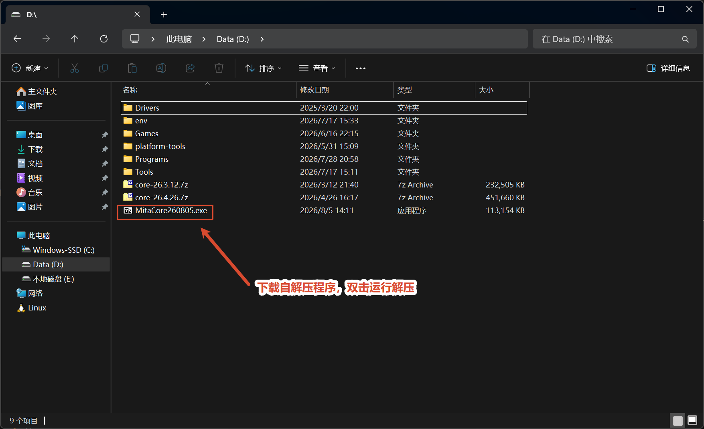
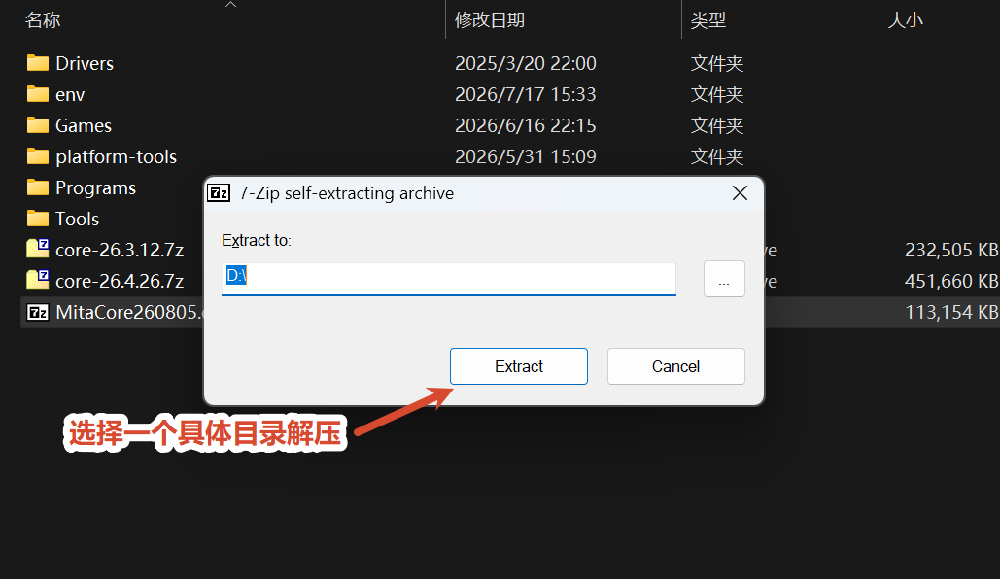
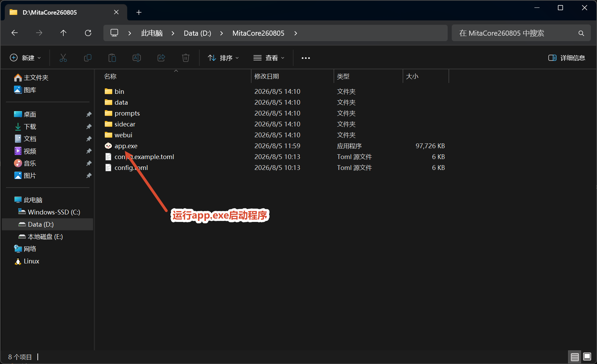
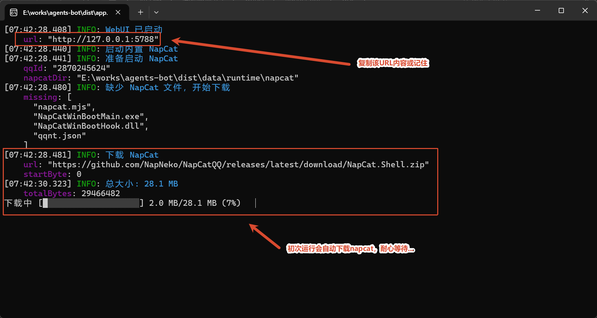
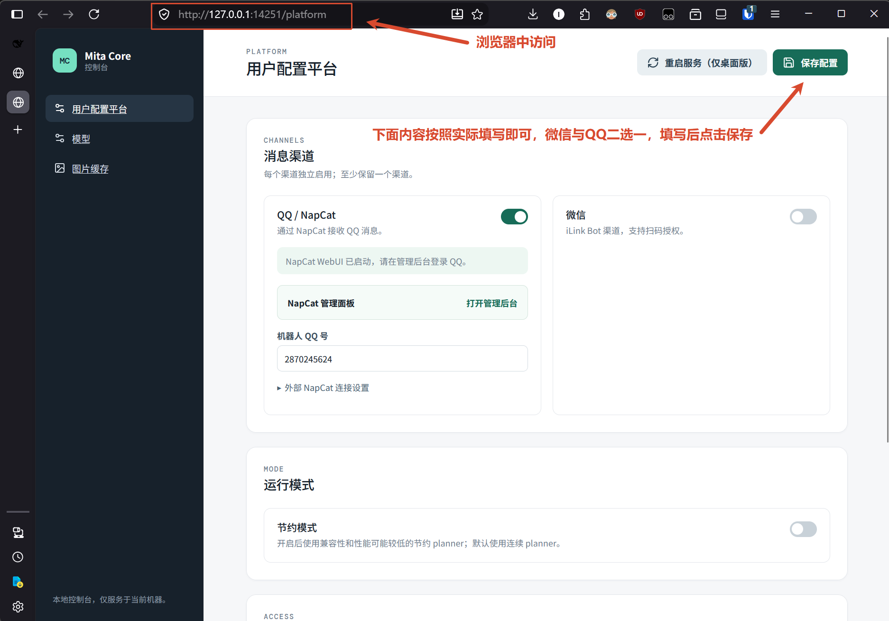
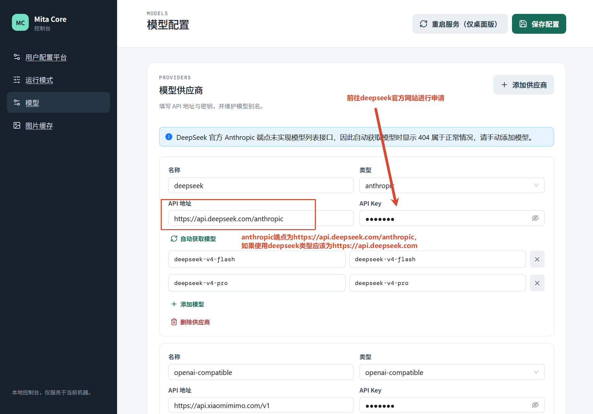
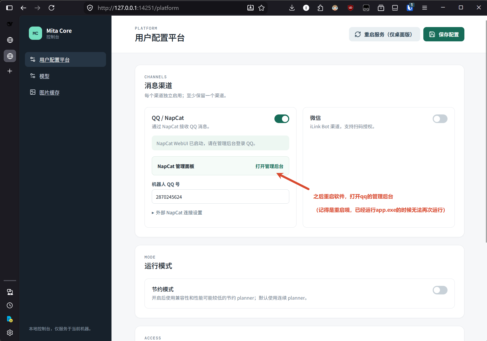
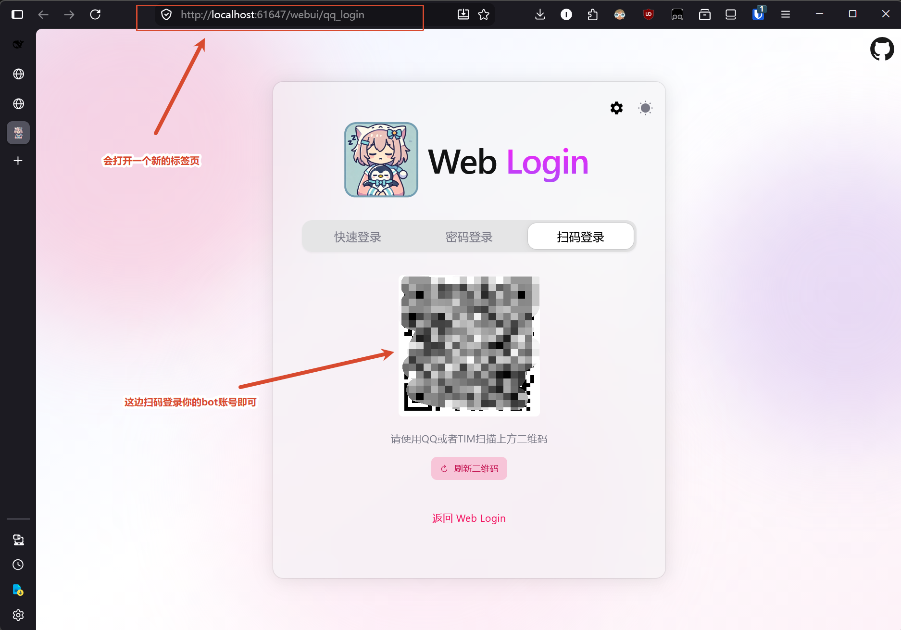
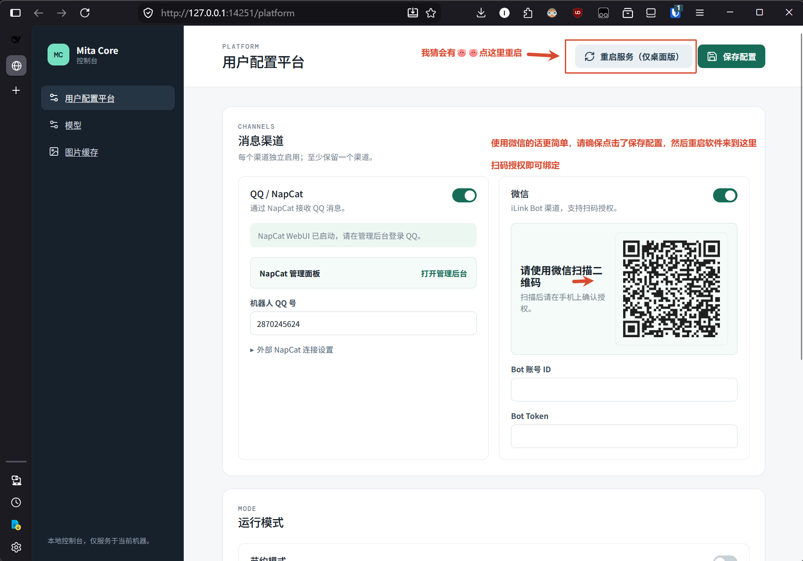

使用前准备
- 一份 Mita Core 自解压程序（示例文件名：
MitaCore260805.exe）。 - 一个可用的模型服务 API Key，例如 DeepSeek 或其他模型服务。
- 如果使用 QQ 渠道，需要准备 QQ 客户端；如果使用微信渠道，需要准备可扫码的微信客户端。
快速流程
1. 下载并解压
下载完成后，双击自解压程序。建议将程序解压到一个独立目录，并记住该目录位置。

在解压窗口中选择一个具体的目标目录，然后点击 Extract（解压）。

2. 启动 Mita Core
进入解压后的目录，确认能看到 bin、data、prompts、sidecar、webui 等目录，以及 app.exe。双击 app.exe 启动程序。

程序启动后会在控制台输出 WebUI 地址。复制日志中 WebUI 已启动 下方第一行的 url，不要复制 NapCat 的地址。

示例地址为 http://127.0.0.1:14251，实际端口以当前窗口输出为准。
3. 打开 WebUI
在浏览器地址栏粘贴刚才复制的地址并访问。进入后默认打开 用户配置平台 页面。

WebUI 只服务于当前电脑。配置完成后不要关闭 app.exe 控制台窗口，否则 WebUI 和消息渠道也会停止。
4. 配置模型服务
点击左侧 模型，进入模型配置页面。添加或修改模型供应商时，填写以下内容：
- 名称：自定义的供应商名称，例如
deepseek。 - 类型：按服务商选择对应类型。DeepSeek 请选择
anthropic；不要选择openai-compatible。 - API 地址：填写服务商提供的接口地址。
- API Key：粘贴服务商后台申请的 Key。
- 模型：点击 自动获取模型，或手动填写服务商支持的模型名称。
配置完成后点击页面右上角的 保存配置。

DeepSeek 配置示例
DeepSeek 的供应商类型请选择 anthropic，API 地址填写 https://api.deepseek.com。该配置使用 Anthropic 端点，比旧版 OpenAI 端点更适合当前程序。请以服务商当前文档为准，不要照抄截图中的脱敏 Key；如果接口要求版本后缀，也要按服务商要求填写。
5. 配置 QQ 渠道（NapCat）
回到左侧 用户配置平台，确认 QQ / NapCat 开关已打开，并填写机器人 QQ 号。
点击 NapCat 管理面板 右侧的 打开管理后台。这会打开一个新的浏览器标签页。

在新页面中选择 扫码登录，使用 QQ 或 TIM 扫描二维码，登录准备作为机器人的 QQ 账号。

登录成功后返回 Mita Core 配置页面，确认机器人 QQ 号与实际登录账号一致。
app.exe 已经运行，不能重复双击启动。修改 QQ 登录状态时，应先按后文的“重启程序”操作，再重新打开 NapCat 管理后台。6. 配置微信渠道（可选）
如果需要使用微信，在 用户配置平台 页面打开 微信 开关，然后点击右上角 保存配置。不要点击页面上的 “重启服务（仅桌面版）”，直接关闭并重新启动 app.exe。
程序重新启动后，页面会显示微信授权二维码。使用微信扫描二维码，并在手机上确认授权；授权成功后，填写或确认页面要求的 Bot 账号信息。

微信和 QQ 可以按需选择。未使用的渠道保持关闭即可。
7. 保存并重启程序
完成模型、QQ 或微信配置后，按以下顺序操作：
- 点击右上角 保存配置。
- 关闭
app.exe，再从解压目录重新启动它。 - 等待
app.exe控制台重新输出启动日志。 - 如使用 QQ，重新打开 NapCat 管理后台确认登录状态；如使用微信，按页面提示完成扫码授权。
常见问题
浏览器打不开 WebUI
确认 app.exe 仍在运行，并使用控制台最新输出的 WebUI url。如果程序刚刚重启，旧端口或旧页面可能已经失效。
修改配置后没有生效
先点击 保存配置，再关闭并重新启动 app.exe。仅修改页面内容而不保存，重启后不会保留。
QQ 管理后台打不开或登录失效
确认 NapCat 相关组件已正常启动，机器人 QQ 号填写正确；如果刚修改过配置，先保存并重启程序，再重新打开管理后台。不要重复启动多个 app.exe 实例。
模型调用失败
检查 API 地址、API Key、供应商类型和模型名称是否匹配服务商；确认账户余额、模型权限及网络连接正常。配置 DeepSeek 时，优先检查类型是否为 anthropic，不要误选旧版 openai-compatible。
如何停止程序
直接关闭 app.exe 对应的控制台窗口即可停止本机服务。下次使用时，从解压目录重新双击 app.exe，再访问新的 WebUI 地址。